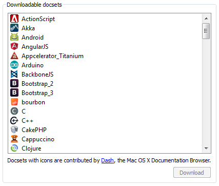

Zeal
Zeal is an offline documentation browser inspired by Dash, available for Linux and Windows.
- Quickly search documentation using Alt+Space (or customised) hotkey to display Zeal from any place in your workspace.
- Search in multiple sets of documentation at once.
- Do not depend on your Internet connection.
- Integrate Zeal with IDEA, Sublime Text, or your favourite IDE with a variety of plugins.
Open source!
Zeal is released under the GPL license, which allows anyone to contribute changes. And it is available free of charge.
Go to GitHub » More screenshots »
More screenshots »
Documentation included
All documentation available for Dash is also available for Zeal. See list on Dash's website.
You can also create your own docsets. Follow instructions for Dash.